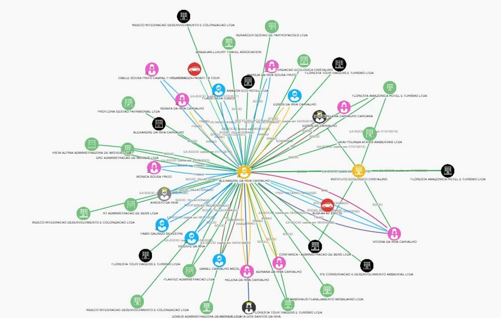

Conheça o
O DataBusca é a melhor solução de busca e enriquecimento de dados sobre todas as pessoas e empresas no Brasil.
Descubra como o mais poderoso Big Data do Brasil com 30 anos de construção vai revolucionar seus resultados.
Dados completos e precisos
são o motor dos negócios
Mais dados. Mais qualidade. Mais precisão.
Nenhum processo é melhor do que a qualidade dos dados que ele utiliza. O DataBusca entrega uma visão rica e confiável do perfil real de pessoas e empresas — dados cadastrais, contato, capacidade de pagamento (renda presumida e score de crédito), sinais de risco (processos, protestos, listas restritivas, óbitos), posse de bens, vínculos e muito mais.
Pesquisa por rede de relacionamentos familiares, sociedades e bens
Isso é um pouco do que você encontra aqui sobre Pessoa Física:
Perfil Demográfico
- Gênero
- Faixa de idade
- Estado civil
- Filhos
- Escolaridade
Renda e Crédito
- Score de crédito
- Renda presumida individual e familiar
- Classe social
- Situação de cobrança
Ocupação e Vínculos
- Tipo de cargo
- Sócio de empresa
- Aposentado/pensionista
- Funcionário público
- Conselho profissional
Contatos
- Telefone e celular
- Operadoras
- Planos
- Email e email corporativo
Sinais Digitais e Comportamento
- Comportamento digital
- Afinidades e Interesses
- Presença Google
- Presença Meta
Ativos e Riscos
- Posse de bens
- Dívidas
- Processos e restrições
- Listas restritivas
- Mandado de prisão
Isso é um pouco do que você encontra aqui sobre Pessoa Jurídica:
Perfil da Empresa
- Matriz/Filial
- Tempo de atuação
- Tipo de empresa
- Natureza jurídica
- Endereços, Fones e Emails
Setor e Atividade
- Setor econômico
- CNAE
- Atividade econômica
- Simples Nacional
- Franqueados
Porte Financeiro
- Porte
- Faturamento presumido
- Faixa de funcionários
- Número de filiais
- Score de crédito
Decisores
- Quadro societário
- Diretores e Gerentes
- Áreas de atuação
Dados incompletos degradam todo o ciclo
Na economia digital, decisões automatizadas continuam sendo tomadas com base em dados incompletos, desatualizados e inconsistentes.
Cadastros incompletos
Erros no atendimento e aumento de retrabalho.
Dificuldade de localização
Queda de efetividade e aumento de custos
Fraude por identidade
Perdas financeiras e risco reputacional
Percepção errada de renda
Inadimplência e deterioração da carteira
Cobrança ineficiente
Baixa recuperação e produtividade comprometida
Oportunidades perdidas
Cross-sell e relacionamento subaproveitados
Aplicações estratégicas
O DataBusca se adapta ao seu problema de negócio
Crédito e Risco
Renda presumida individual, familiar e empresarial, score de crédito e posse de bens.
Prevenção à Fraude
Cruze dados em milissegundos. Identifique inconsistências antes que virem prejuízo.
Cobrança
Localize mais devedores e priorize os perfis com maior chance de quitar a dívida.
Marketing e Vendas
Enriquecimento de formulários com dados para análise de perfil e priorização de abordagem.
PLD, KYC e Compliance
Processos regulatórios blindados com dados cadastrais, societários e de risco.
Onboarding Digital
Formulários automáticos e validação em tempo real. Cadastro em segundos.
Mapeamento de Mercado
Decisões com dados, não achismo. Tendências e indicadores exclusivos.
Inteligência Artificial
IA precisa de dados. Treine e customize modelos com Big Data de verdade.
Higienização e Enriquecimento
Valide, corrija e enriqueça bases em tempo real. Cadastros rasos viram perfis completos.
Quem procura, Aqui acha!
Quanto mais objetiva for a forma de busca, mais preciso será o resultado. Por exemplo, se você tem o nome e a data de nascimento, a chance de identificarmos quem você procura é de 99%.
Sempre tivemos como rotina de DataBase, processos permanentes de organização e depuração. Como consequência, nosso Big Data é imenso e prático, o que facilita nossas buscas e segmentações, além de potencializar nossas ferramentas integradas exclusivas.
Duas modalidades de acesso
Consulta
Localize PF e PJ com alta precisão, inclusive com variações de grafia. Múltiplas chaves de busca e matching fonético.
Enriquecimento
Transforme bases internas em bases ricas e detalhadas com mais de 300 atributos por entidade.
Fontes Seguras e compromisso com Privacidade
Todas as informações que temos são de fontes públicas espalhadas pela internet. O que fazemos diariamente é montar uma grande inteligência para capturar essas informações e entregá-las a você.
O DataBusca está 100% em conformidade com a LGPD e somos certificados pelas normas ISO 27001 e ISO 27701, garantindo os mais altos padrões de segurança da informação e privacidade de dados.
Acesse como preferir
Quatro modalidades de consumo para cada necessidade operacional
Consulta em Tela
Busca individual com múltiplas chaves e suporte fonético
API em Tempo Real
Integração direta para onboarding e validação
Troca de Arquivos
Enriquecimento incremental — pague só por dados novos
Enriquecimento Total
Envie a chave, receba todos os atributos
Transforme seus processos com dados completos
Fale com um especialista e descubra como o DataBusca pode impactar suas operações de decisão, risco e efetividade operacional.